explained for parents
What your child is learning at each age from 2 to 7, what the Year 1 phonics check actually is, and the ten-minute routines that make it stick. Written by an Australian dad who built an app because the spelling list kept coming home.
7 days free, then a local price shown in the app. Cancel anytime. No ads, ever.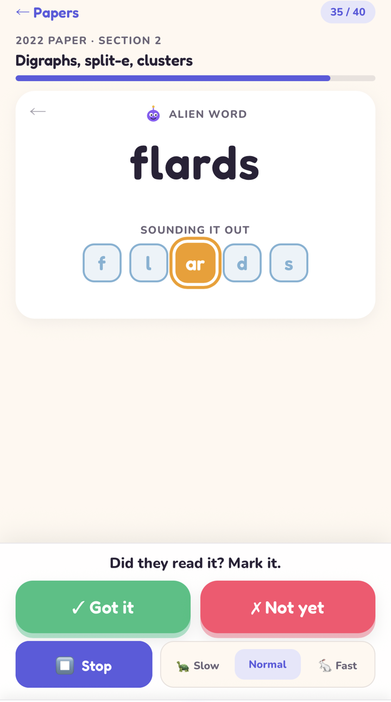
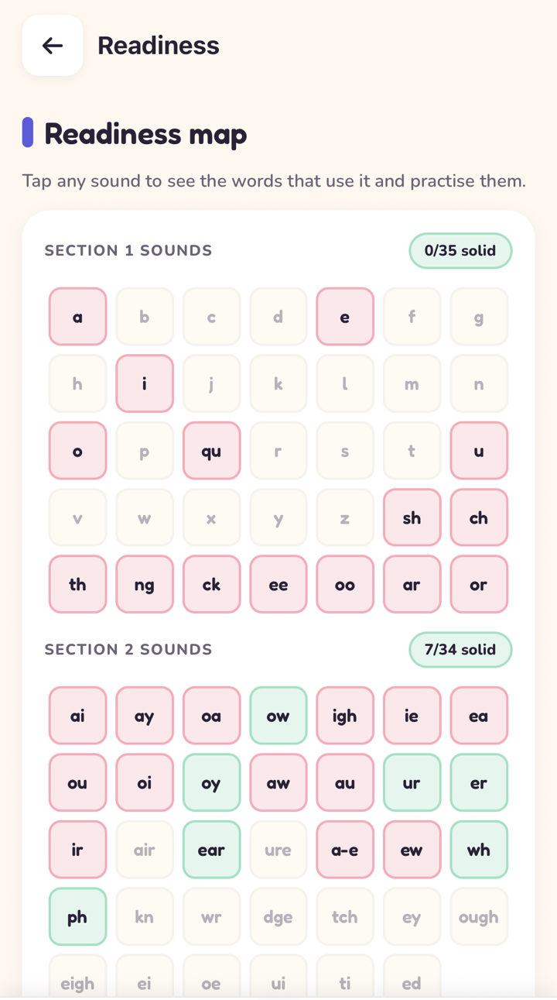
The building blocks
Every English word is built from about 70 phonograms. Start here: what a phonogram is, and the full list with every sound.
What is a phonogram? A parent's 5-minute guide
A phonogram is a letter or group of letters that stands for one sound, like igh in night. What that means, how it differs from a phoneme or digraph, and why it makes spelling easier.
Read the guide →The 70 phonograms: every sound, with example words
All 70 in teaching order, every sound each one makes and an example word for each. Prints as a clean A4 chart.
See the chart →Spelling at home
The weekly list, the tricky words that come with it, and a ten-minute routine that teaches the words before it tests them.
Year 1 spelling words: a week-by-week list
Five weekly Year 1 lists in phonics order, ten words each, what the words have in common, and how to practise them in ten minutes.
See the list →Common exception words: why 'said' isn't spelled the way it sounds
All 109 tricky words for Year 1 and Year 2, grouped by the one rule each breaks, and a 60-second way to teach them.
Read the guide →How to practise spelling words without tears
A calm ten-minute routine for the weekly list: hear it, sound it out, write it, use it in a sentence, celebrate.
Read the guide →The Year 1 phonics check
Forty words, half of them made up, read one to one to the teacher. Now mandatory in England, six Australian states and New Zealand. Here's what's in it and how to get ready.
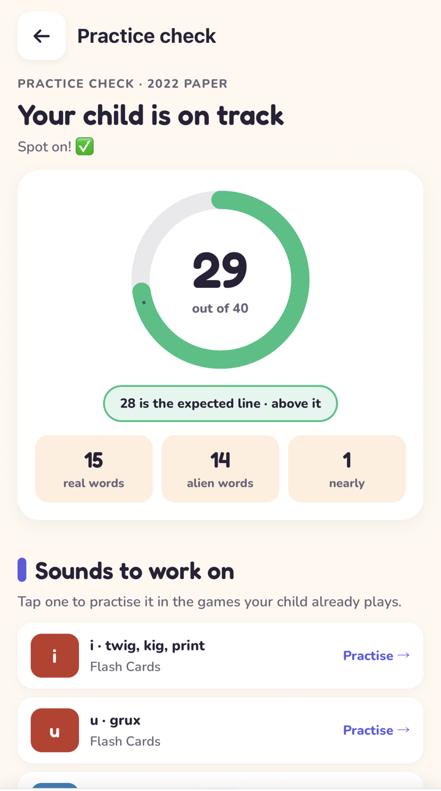
The Year 1 Phonics Screening Check, explained for parents
What's actually in the check, what the pass mark is, what the alien words are for, and how to get your child ready without turning your kitchen into an exam hall.
Read the guide →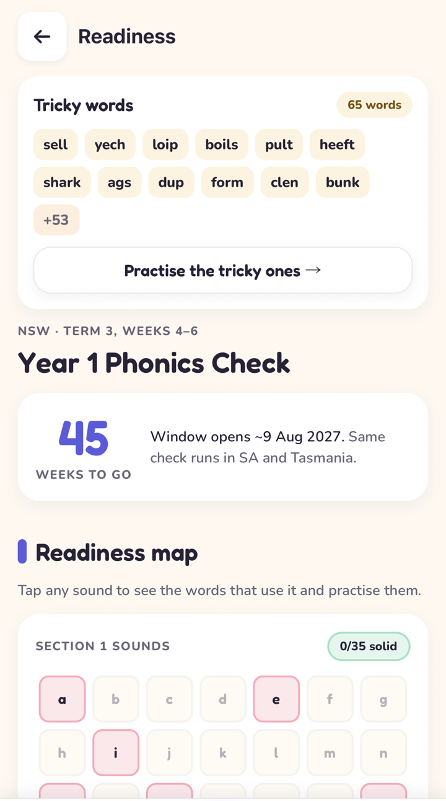
The Year 1 Phonics Check in Australia, state by state
NSW, Victoria, Queensland, WA, SA and Tasmania now run the same 40-word check in Term 3. Here's what it is, why it's suddenly everywhere, and how to make sure your child walks in ready.
Read the guide →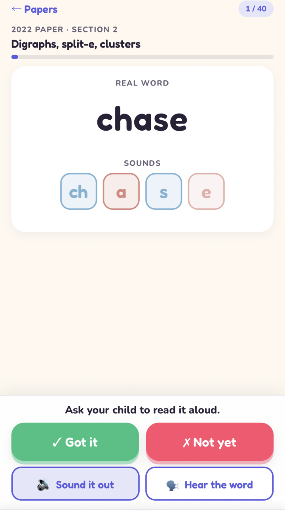
Is there a phonics test in first grade? What US parents should know
There's no national phonics check in the US, but most schools now screen early readers, often with nonsense words. Here's what those screeners look for, and a free way to see where your own child stands.
Read the guide →Alien words, explained
Half of the Year 1 phonics check is made-up words. Here's why, why good readers get them wrong, and how to practise them without a worksheet.
Read the guide →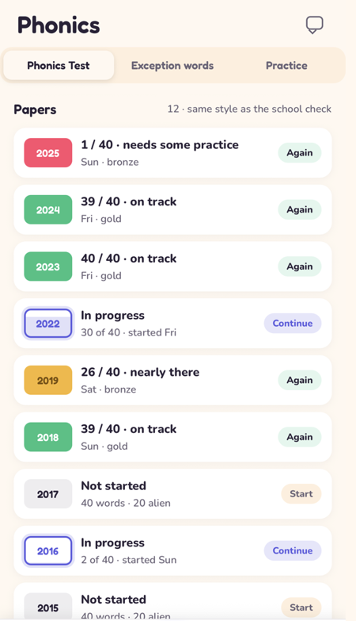
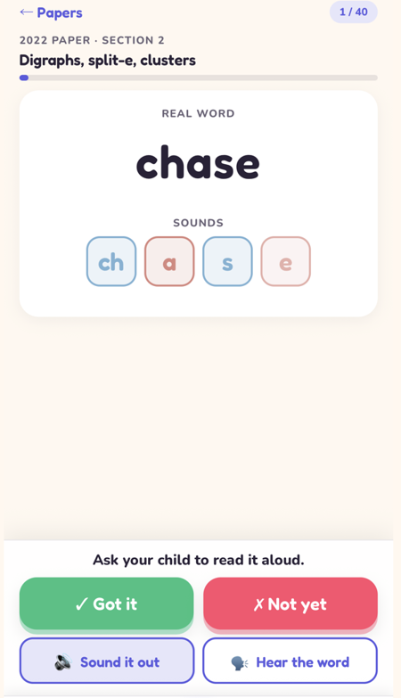
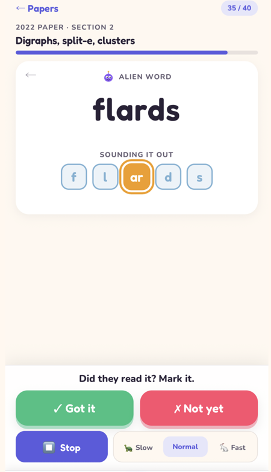
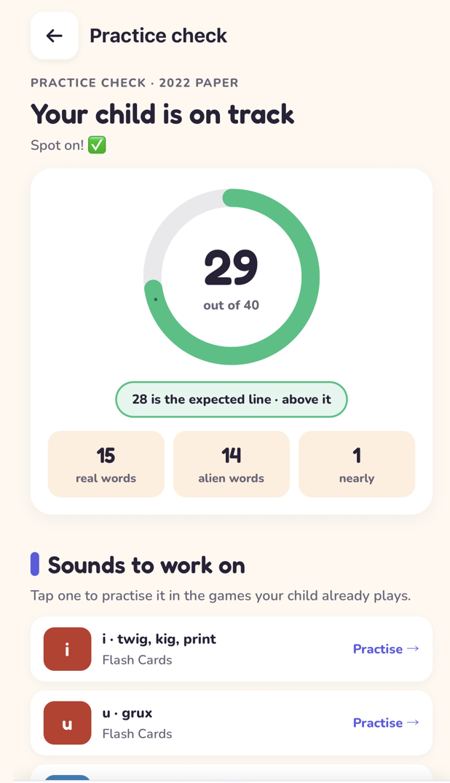
Phonics by age
From ears-only play at two to suffix rules at seven. What's normal, what to do at home, and what can wait.
- 2–3years
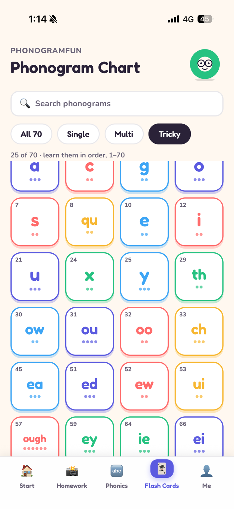
Phonics for 2 and 3 year olds
Nobody needs flashcards at two. But the sounds-first play you do now is the foundation everything else stands on. Here's what actually matters, and what can wait.
Read → - 4years
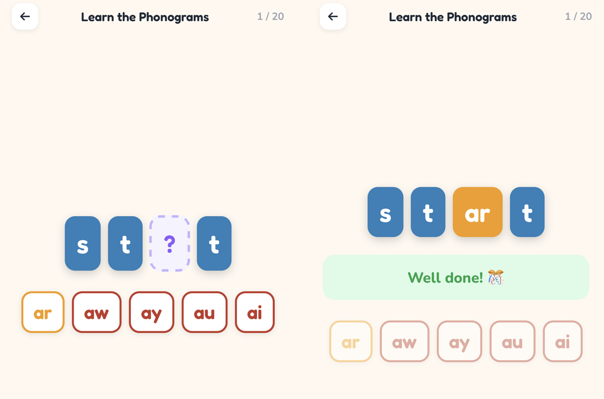
Phonics for 4 year olds
Four is when letter sounds come in, in Reception, Prep, Kindy or pre-K. The single most important thing you can do is say them purely. Here's what else matters.
Read → - 5years
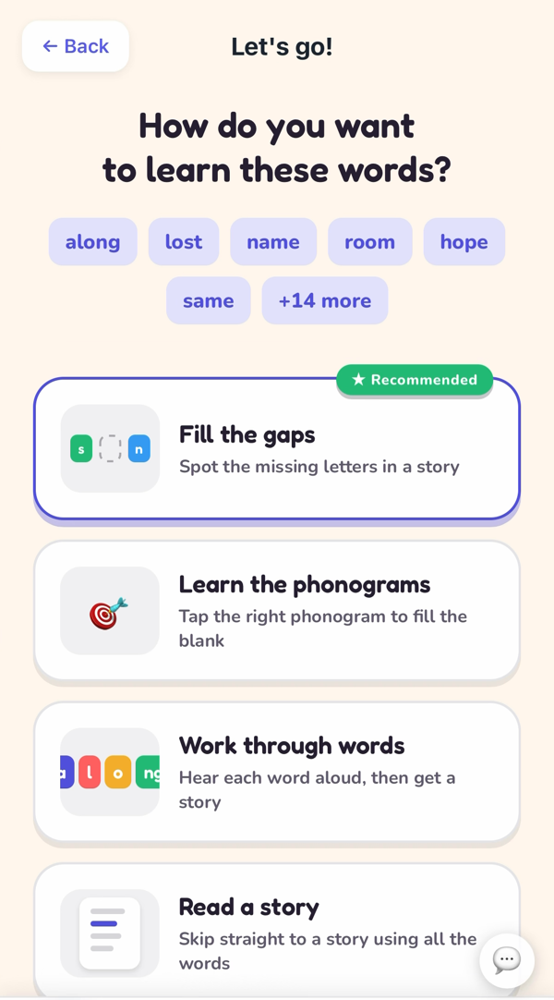
Phonics for 5 year olds
Five is the year reading clicks for most children: blending, the first digraphs, tricky words, decodable books and, for many families, the first spelling list home from school.
Read → - 6years
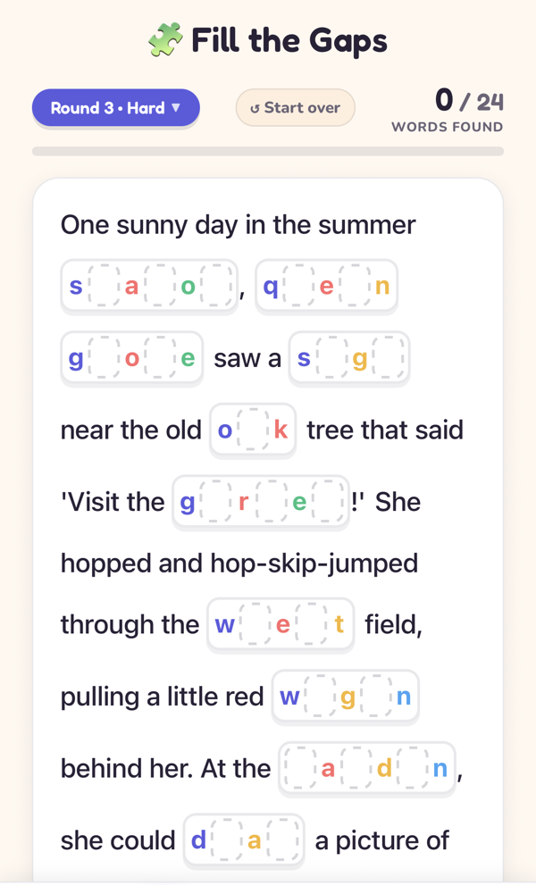
Phonics for 6 year olds
Six is Year 1 (or first grade): alternative spellings, split digraphs, weekly spelling lists, and the phonics check in June or Term 3. Here's the map.
Read → - 7years
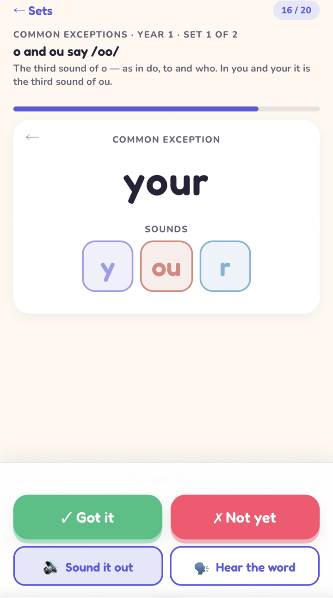
Phonics for 7 year olds
At seven, phonics turns into spelling: suffix rules, homophones, the words that break the rules, and, for one child in five, a second go at the phonics check.
Read →
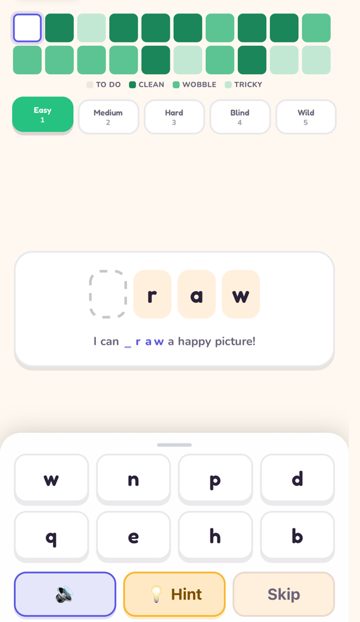
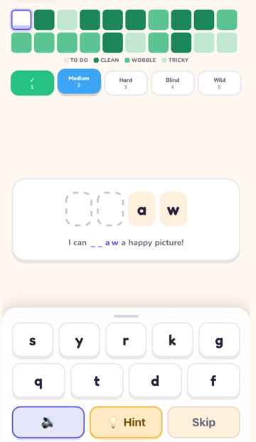
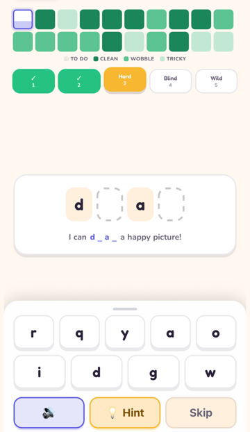
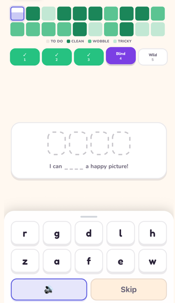
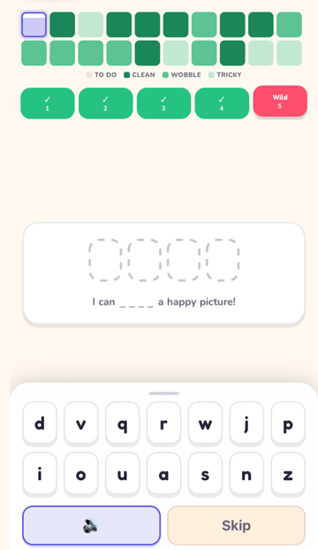
The idea behind all of it
English isn't 26 letters that misbehave. It's about 70 phonograms (single letters and letter teams) that each have a small, fixed set of sounds.
"Sight" isn't five random letters; it's three sounds your child can see, hear and tap. That's the Spalding method, and it's what Phonogram Fun is built on.
Explore all 70 sounds →